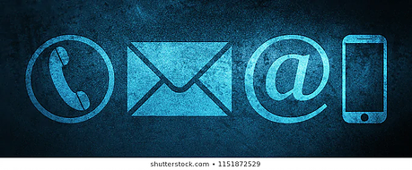

Herramientas del Correo Electrónico
Así como tiene una estructura sólida, cada correo se representa por las herramientas que trae y ofrece, no todos tienen las mismas herramientas, algunas poseen unas mejores que otras pero hay algunas que si podemos encontrar en todos los correos que utilices.Entre estas herramientas tenemos:
- Botón de Redactar el cual al ser presionado te lleva a una ventana para escribir un nuevo correo.
- Botón para Borrar sirve para eliminar la cantidad de correos que sea seleccionada anteriormente.
- Icono para Mover, el correo está dividido en carpetas las cuales el usuario puede manejar a sus gustos, este icono te permite trasladar de una carpeta a otra los correos.
- Icono para Marcar, algunas veces son enviados correos importantes y con este icono se puede colocar como favorito al presionarlo, además lo envía a otra carpeta.
- Dentro del mensaje encontramos dos iconos que son el de Responder y Reenviar los cuales son usados debido a la necesidad del usuario.
- También hay iconos en los que se puede Asignar un color , el cual es una etiqueta con la que puedes diferenciar unos correos de otros.
- Icono de Archivar el cual guarda los correos en otra carpeta llamada archivo, y solo los puedes encontrar ahí.
